Tanishuv videosi: 4 variant (haqiqiy video)
Hammasi haqiqiy video, surat emas. Har birini oching: ilova birinchi ekrandan ochiladi va orqada shu videolar aylanadi, har biri 5 soniya. A variant hozirgi video, u o‘chirilmagan.
A — hozirgi eski
Er-xotin orqadan (Yevropa), o‘zbek to‘yi hovlisi, choy, Buxoro.
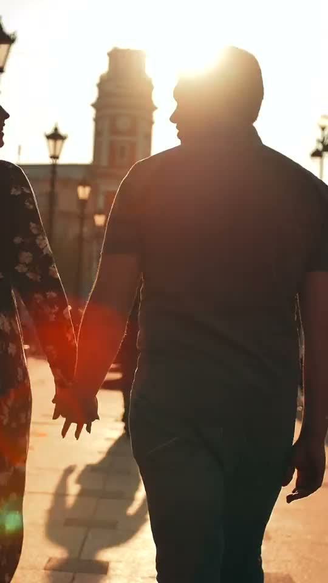
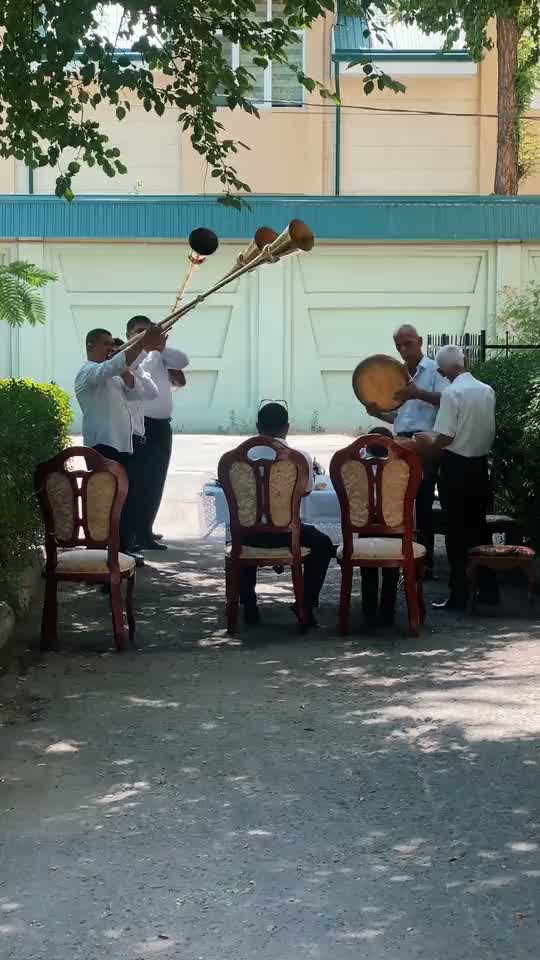
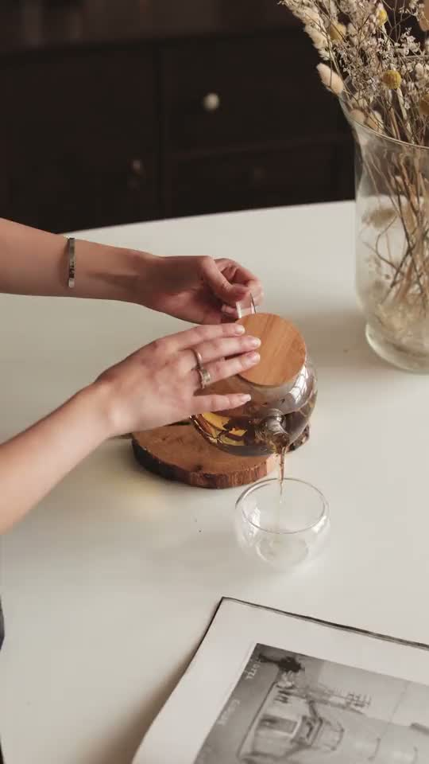
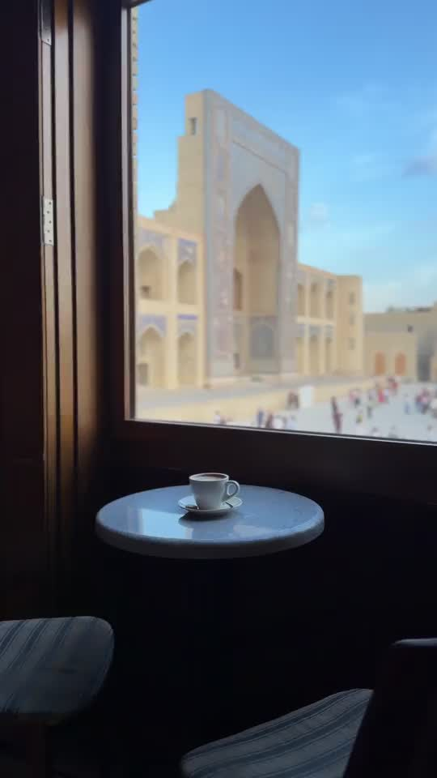
B — juftliklar, yuzlari ko‘rinadi
Choy ichib kulayotgan juftlik, bug‘doy dalasidagi juftlik, Istanbul qirg‘og‘idagi keksa er-xotin, gullar orasidagi juftlik, o‘zbek to‘yi, Buxoro. Yangi juftliklar musulmon yoki turk oilalari.
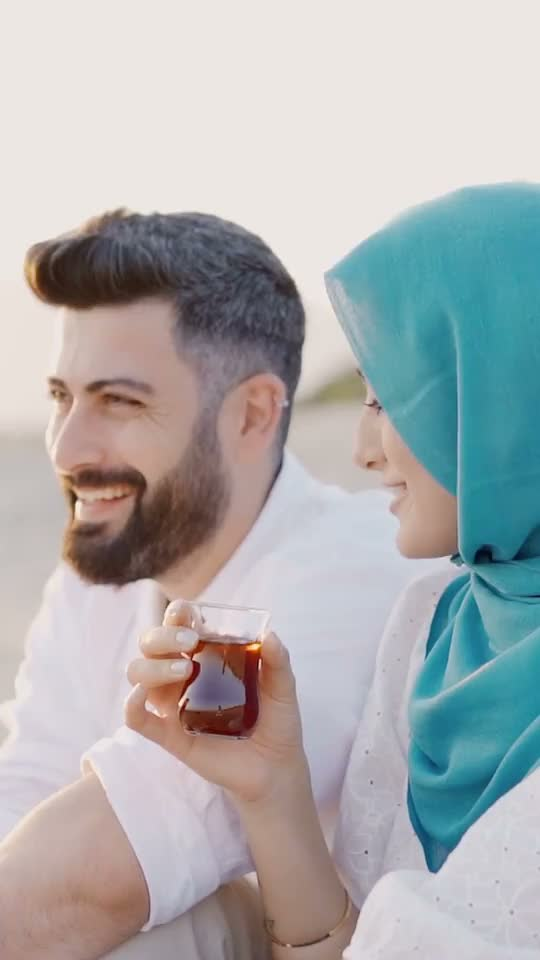
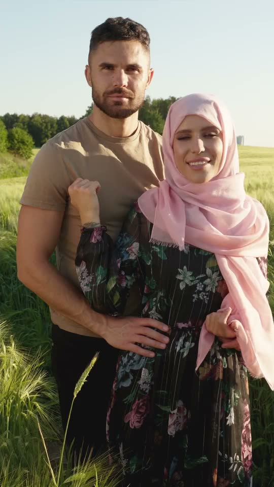
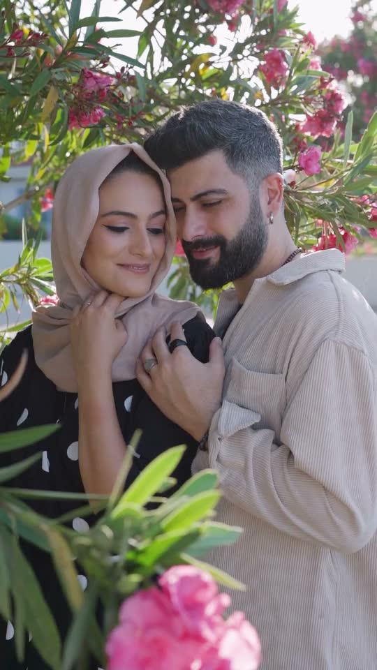
C — yuzlar tanilmaydi litsenziya uchun eng xavfsiz
Paromdagi juftlik orqadan, o‘zbek to‘yi, kuzgi bog‘da qo‘ltiqlashib yurgan keksalar, dasturxonda non uzatayotgan qo‘llar, qirg‘oqdagi keksa er-xotin, piknikda choy quyish.
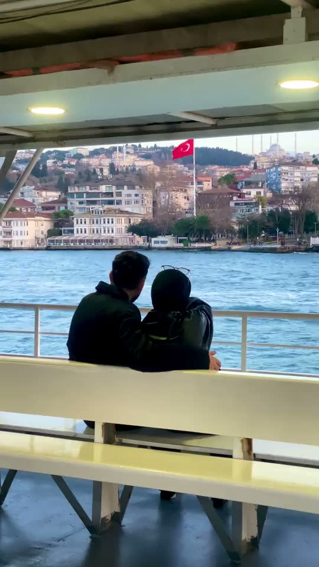
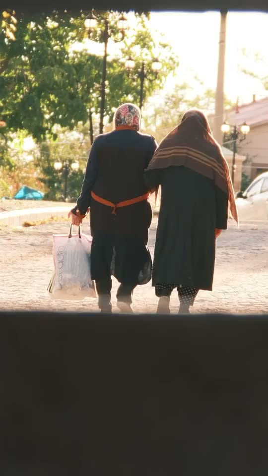
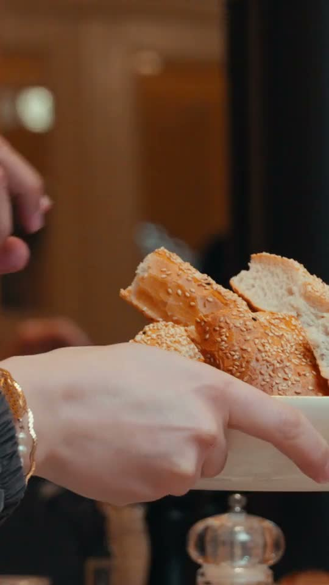
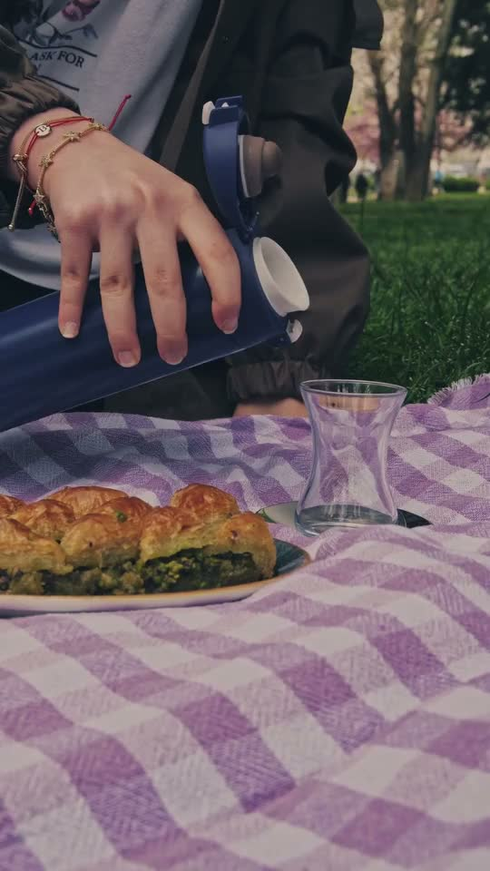
D — eskisi va yangilari aralash
Hozirgi videoga yangi juftliklar qo‘shilgan: er-xotin orqadan, paromdagi juftlik, to‘y, keksalar sayri, choy, kulayotgan juftlik, Buxoro.
D variantni ochishBilish kerak diqqat
Bepul saytlarda (Pexels, Pixabay, Mixkit, Coverr) o‘zbek yoki boshqa O‘rta Osiyolik juftlik videosi topilmadi: o‘zbek joylari faqat olomon, binolar va manzaralar ko‘rinishida bor. Shuning uchun yangi juftliklar musulmon va turk oilalari. Haqiqiy o‘zbek juftliklari kerak bo‘lsa, eng yaxshi yo‘l o‘zimiz suratga olish yoki pullik stokdan sotib olish. Yuzi ko‘rinadigan videolarda (B) Pexels “bu odamlar mahsulotni tavsiya qiladi” degan taassurot berishni taqiqlaydi. Manbalar: SOURCES-video.md.